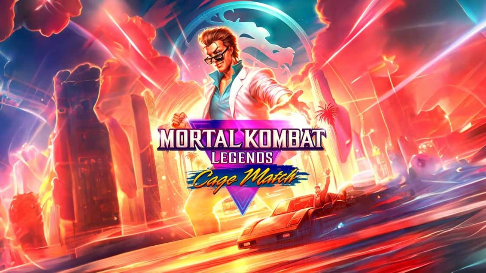
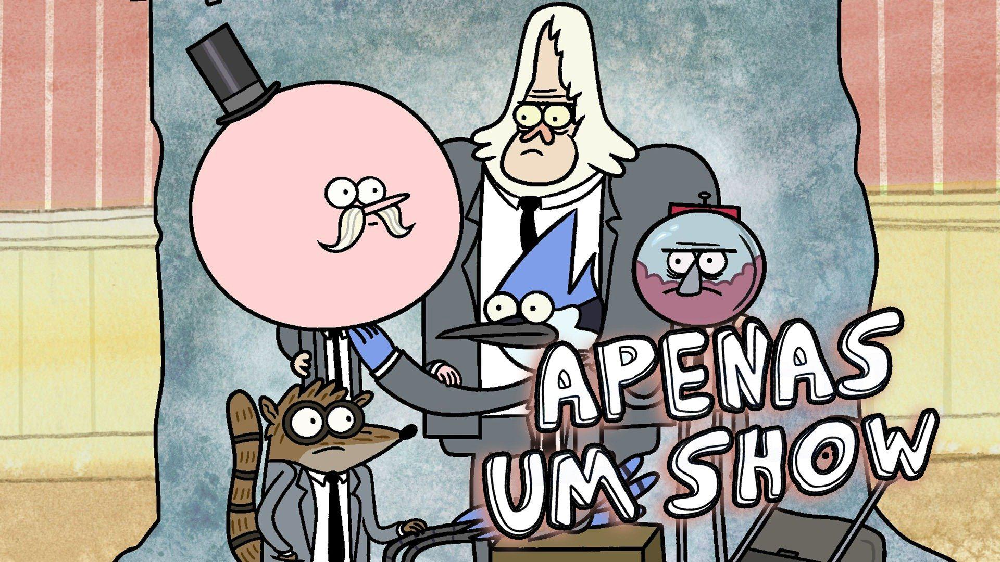
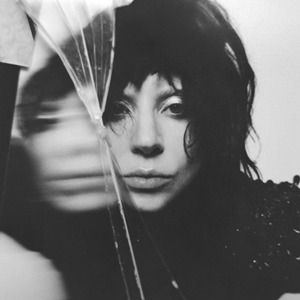
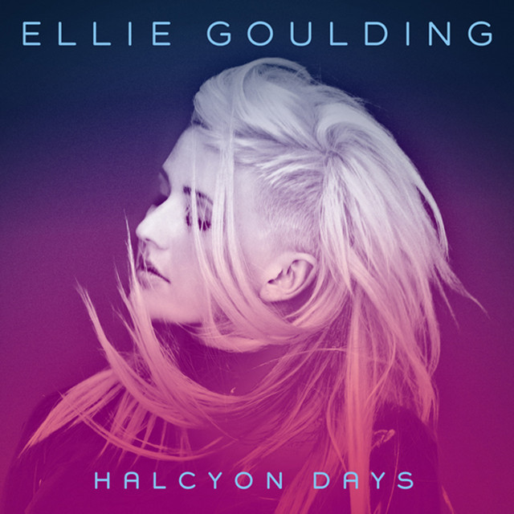
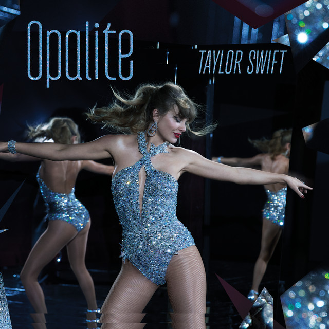

Imagem: Tomb Raider: A lenda de Lara Croft
O seriado animado é uma continuação da história da última trilogia de jogos Tomb Raider - disponível na plataforma de streaming Netflix - em que a personagem Lara Croft enfrenta novas aventuras cheias de ação e um toque sobrenatural ao lado de seus amigos e aliados poderosos. A série apresenta duas temporadas com 8 episódios cada.
Acesso da série na Netflix!
2.) Mortal Kombat Legends: Cage Bom de Luta (+18)

Imagem: Mortal Kombat Legends: Cage Bom de Luta
O filme animado - do mesmo universo da franquia de jogos Mortal Komabt - desenvolve a narrativa do personagem Johnny Cage ao lado de Ashrah e seu assistente enquanto defendem o plano Terreno de uma invasão demoníaca liderada por Shinok. O filme está disponível na plataforma de streaming HboMax.
Acesso do filme no HboMax!
3.) Apenas Um Show (+10)

Imagem: Apenas um show
"Apenas Um Show" é um desenho animado do canal infantil Cartoon Network, no qual se acompanha a história de dois melhores amigos - Mordecai e Rigby - que trabalham em um parque, onde uma simples tarefa se torna uma missão épica, divertida e alucinante. O seriado de dez temporadas está disponível na plataforma de streaming HboMax.
Acesso do desenho no HboMax!
Músicas:
1.) Mayhem - Álbum da cantora Lady Gaga

Imagem: Mayhem - Álbum da cantora Lady Gaga
O álbum de estúdio "Mayhem" é o mais recente lançado pela cantora Lady Gaga. O álbum apresenta hits globais como "Die with a smile", "Abracadabra", "Disease", entre outras músicas... Acesso do álbum na plataforma de música Spotify!
2.) Burn - música da cantora Ellie Goulding

Imagem: Burn - música da cantora Ellie Goulding
A música "Burn" da cantora Ellie Goulding funciona como um lembrete que nascemos para brilhar, e que nada nem ninguém irá ofuscar nossa chama pessoal! Acesso da música na plataforma de música Spotify!
3.) Opalite - Música da cantora Taylor Swift

Imagem: Opalite - Música da cantora Taylor Swift
A música "Opalite" do novo álbum cantora Taylor Swift é uma música que mexe muito com o coração de quem a ouve por trazer um lembrete fundamental que ninguém encontra o amor verdadeiro, mas sim, se constroí por meio de um processo gradual e constante mesmo em momentos díficeis, assim como a pedra opalita que é produzida artificalmente. Acesso da música na plataforma de música Spotify!
Games:
1.) Valorant (+14)
Imagem: Valorant
O jogo "Valorant" - da Riot Games - é um fps tático (first person shooter) cooperativo online, em que os jogogadores são divididos em duas equipes, ambas formadas por 5 jogadores: ataque - plantam a spike; e a defesa - defendem o bomb da invasão dos atacantes e impedem que a bomba exploda. O jogo é gratuito e está disponível para download no próprio site do jogo e pelo inicializador da Epic Games. Link de acesso para o site do jogo para download!
2.) Mortal Kombat 1 (+18)
Imagem: Mortal Kombat 1
O jogo "Mortal Kombat 1" é o décimo segundo e o mais recente jogo da franquia Mortal Kombat. O jogo é uma continuação direta da história do título anterior - Mortal Kombat 11 - na qual uma nova história em um novo universo criado pelo novo deus do tempo Liu Kang se desenvolve com toques nostálgicos e sangrentos típicos da franquia, mas também com novas abordagens tanto em sua jogabilidade quanto na prórpia narrativa. O jogo está disponível para plataformas como PS5, Nintendo Swicth, PC e Xbox Series X|S. Site oficial do jogo!
3.) Hollow Knight: Silksong (+12)
Imagem: Hollow Knight: Silksong
O jogo "Hollow Knight: Silksong" é o segundo jogo da franquia Hollow Kngiht. Nele, acompanhamos a personagem Hornet, a qual era uma personagem coadjuvante no primeiro título, em uma aventura épica cheia de mistérios, inimigos, aliados e diversos ambientes em um clima fantasioso e meio gótico. O jogo está disponível para plataformas como PS4, PS5, Nintendo Swicth, PC e Xbox One e Xbox Series X/S. Site oficial do jogo!

.jpg)
.jpg)